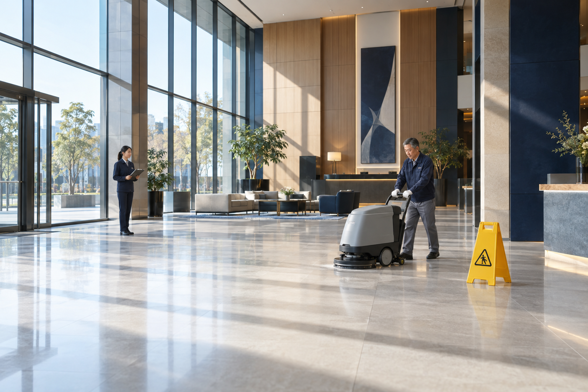
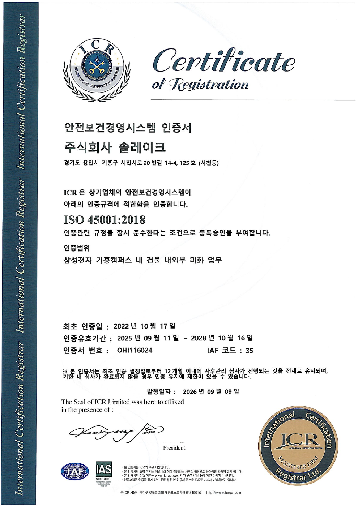

기흥 K1·K2 생산 라인 11곳의 수행 경험
수행 분야 보기EXPERIENCE INTO EVERYDAY CARE반도체 라인미화 경험자가 만든 솔리버
반도체 현장의 관리 기준을,
귀사 일상의 청결과 안전으로.
좋은 미화는 청소가 끝난 뒤에도 차이를 남깁니다. 반도체 라인에서 경험을 쌓은 숙련 인력이 작업 기준, 안전 확인, 결과 점검을 일반미화에 접목합니다. 고객이 업무에 집중할 수 있는 환경을, 현장에 맞는 합리적인 비용으로 관리합니다.
- 숙련 인력의 현장 경험
- 절차와 점검으로 관리
- 필요한 범위에 맞춘 비용


솔리버의 시작
퇴직 이후에도 이어지는 경험.
새로운 현장을 향한 열정.
솔리버는 솔레이크에서 퇴직한 숙련 인력이 주축이 되어 설립한 회사입니다. 일반미화와 비품관리에 전문적으로 집중하며, 현장 경험을 바탕으로 높은 관리 품질과 합리적인 가격 경쟁력을 함께 제공합니다.
무엇을 먼저 확인하고, 어떤 순서로 작업하며, 어디까지 점검해야 하는지 아는 사람들. 그 경험을 사무실과 공용 공간의 청결·안전 관리로 이어갑니다.
사람과 경험으로 만든 회사 이야기고객이 맡기는 이유
청소를 맡기는 결정,
관리의 기준까지 살펴보세요.
청소 횟수와 인원만으로는 현장의 관리 수준을 설명하기 어렵습니다. 솔리버는 작업의 기준과 확인 방법, 필요한 범위를 함께 설계합니다.
작업 결과를 확인할 수 있는가
공간별 순서와 완료 기준을 정하고, 남은 오염·물기·소모품 상태를 확인합니다.
청결을 ‘했다’는 말에서‘확인하는 관리’로.
이용자의 일상을 고려하는가
업무 시간과 통행 동선, 당일 위험을 살펴 작업 구간과 방법을 조정합니다.
이용자와 작업자 모두를생각하는 현장 운영.
우리 현장에 필요한 비용인가
관리 면적과 오염 형태, 작업 주기·시간대를 확인해 인력과 투입 범위를 정합니다.
필요한 관리에 집중하는합리적인 비용 설계.
반도체 경험을 일반미화로
노하우를 설명하는 데서 끝내지 않고,
매일의 작업에 적용합니다
반도체 라인미화에서 체득한 절차 준수, 위험 공유, 현장 관찰의 습관을 사무실·공용 공간·건물 외곽의 관리에 접목합니다. 공간의 용도와 이용 동선에 맞춰 방법을 정하고, 작업 후 상태까지 확인합니다.
누가 맡아도 같은 기준으로
공간별 작업 순서와 도구·세정제, 완료 확인 기준을 정합니다. 사무실과 화장실처럼 용도가 다른 공간은 각각의 방법으로 관리합니다.
고객의 이점 · 일관된 작업 기준
오늘의 현장 변화를 먼저 확인
당일 물기와 공사 구간, 이용자 동선과 주의 사항을 공유합니다. 작업 구간과 시간을 조정해 이용자의 통행과 업무를 고려합니다.
고객의 이점 · 변화에 대응하는 작업
작업을 살피고 방법을 개선
작업 자세와 도구 사용, 통행 방해와 현장 상태를 함께 관찰합니다. 반복되는 위험과 불편을 찾아 작업 방법과 교육에 반영합니다.
고객의 이점 · 현장 관찰을 통한 개선

ISO 45001 · 안전보건경영시스템
인증과 안전관리 보기 안전관리를 지속하는 운영 체계
위험 확인, 역할 분담, 교육과 개선 기록을 연결합니다. 보유 인증의 범위는 삼성전자 기흥캠퍼스 내 건물 내외부 미화 업무입니다.
숙련된 경험 · 합리적인 비용
관리 수준은 꼼꼼하게.
비용은 현장에 맞게.
숙련 인력의 경험을 작업 계획에 반영하고, 필요한 관리 범위에 맞춰 인력과 시간을 설계합니다. 반복되는 작업과 오염 원인을 점검해 운영을 개선하며, 전문성과 가격 경쟁력을 함께 추구합니다.
관리 범위와 비용 설계 보기경험을 작업 계획에 반영
공간의 상태와 작업 조건을 살펴 필요한 방법과 순서를 정합니다.
필요한 범위에 맞춘 인력과 시간
관리 대상, 작업 주기와 시간대를 정하고 그에 맞춰 투입 범위를 설계합니다.
점검을 통해 운영 낭비 개선
반복되는 오염과 작업을 검토해 불필요한 작업과 재작업을 줄이는 방향으로 조정합니다.
서비스
공간은 달라도,
관리의 기본은 같습니다

01
일반미화
반도체 라인에서 익힌 작업·안전관리 노하우로 사무실, 화장실, 공용 공간과 건물 외곽을 관리합니다.
- 사무 공간과 공용 구역
- 화장실과 편의 시설
- 건물 외곽 및 계절 관리

02
비품관리
비품의 구매·유지·관리와 설치·이동, 사무실 레이아웃 및 행사 업무를 지원합니다.
- 설치·철거와 차량 이동·적재
- 사무실 레이아웃 변경
- 행사 지원과 총무 관련 업무

일하는 방식
현장에 맞춘 범위 설계
맞춤 관리
공간마다 필요한 관리가 다릅니다. 귀사 현장에 필요한 항목만 골라 범위를 정합니다.
| 관리 대상 | 일상 청결 | 위생 관리 | 점검·보고 | 출입 동선 관리 |
|---|---|---|---|---|
| 사무 공간 | 해당 없음 | |||
| 공용·위생 시설 | 해당 없음 | |||
| 건물 외곽 | 해당 없음 |
기본필요 시 선택
개념을 보여 주는 예시입니다. 실제 범위는 현장 진단 후 정합니다.
현장 진단
공간 용도와 동선, 출입 조건을 확인합니다.
범위와 기준 설계
관리 대상과 주기, 시간대, 확인 방법을 정합니다.
작업
정한 기준대로, 업무에 방해되지 않는 시간에 작업합니다.
점검과 조정
결과를 확인하고, 변화가 생기면 범위를 다시 맞춥니다.
현장 관리 기준
출입 동선 관리
출입구와 보행로로 들어오는 먼지와 오염을 줄입니다.
공간별 관리 기준
공간 용도에 따라 주기와 확인 기준을 정합니다.
작업 후 재확인
오염, 물기, 소모품, 비상 동선을 다시 확인합니다.
시설 이상 공유
누수와 파손은 시설 담당자에게 알립니다.
정해진 범위 내 작업
승인 범위 밖의 설비, 자료, 물품은 다루지 않습니다.
안전 우선 작업
작업 전에 위험부터 확인합니다.
고객사 절차와 보안 규정에 맞춘 운영
- 승인된 구역과 시간에만 작업합니다.
- 기기 반입과 문서·사진 반출 기준을 지킵니다.
- 전 직원이 보안서약을 하고 매월 보안교육을 받습니다.
- 이상 징후는 지정된 보고 체계로 바로 알립니다.
귀사의 공간을 이해하는 데서 시작합니다.
숙련된 경험과 체계적인 관리,
우리 사업장에 맞게 만나보세요.
공간 용도와 관리 범위, 작업 주기부터 확인해 보세요.
맞춤 관리 방식 살펴보기 서비스 관련 질문 확인하기